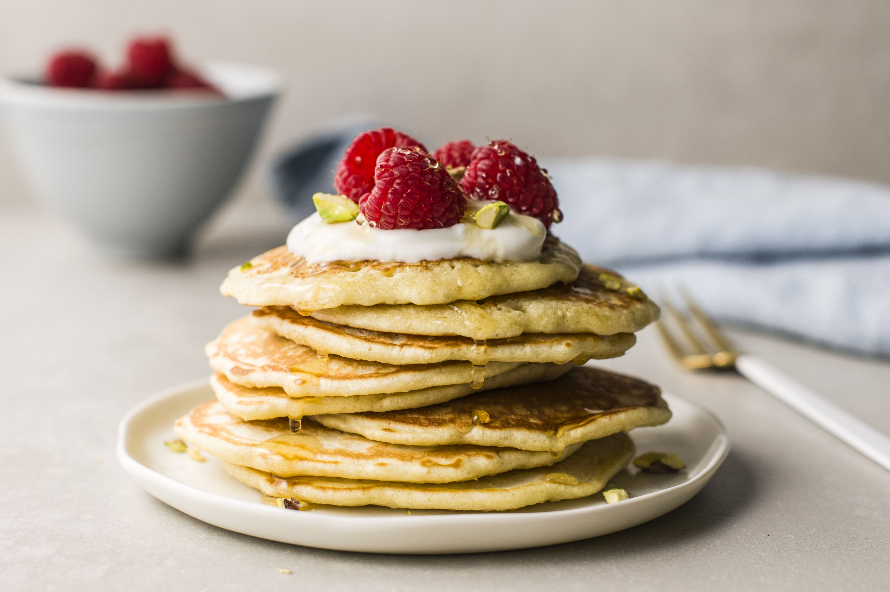

Pancakes

A stack of home-made pancakes
A basic recipe for home-made pancakes. They can be completed with the topping of your chosing
Ingredients
- 2 eggs
- 100ml milk
- 300g flour
- A small amount of butter
- 1/4tsp of salt
- A topping of choice
Steps
- Crack the two eggs into a bowl and beat them with a whisk or a fork.
- Add 100ml of milk to the eggs and stir to mix them together.
- Add the flour and the salt to the wet ingredients and stir until well mixed and no lumps are present.
- Pour the mixture into a pan on a medium to high heat. Flip when bubbles can be seen forming on the pancakes.
- Once golden brown on both sides, serve and add the topping of your choice.